远程实验平台环境图形化调试指南¶
调试说明
通常来说，使用简单粗暴的printf大法（在特定的地方打印日志）就能够处理绝大多数的bug。但是对于大型的项目开发或数量超多的源码，printf大法就不能快速地去定位问题所在。功能强大的GDB调试是Linux系统下的一个程序调试利器，使用GDB调试可以说是作为Linux下的程序员应当要掌握的一大技能。然而，GDB因其命令行的方式想必会挡住了一大波同学，默默地继续使用printf。那有没有带图形化调试界面的调试方法呢？
接下来，我们为同学们介绍调试手段的重头戏：使用VSCode来调试xv6 : )
为了给同学们演示如何用VSCode图形化调试XV6，我们录制了两个演示视频，建议到bilibili上观看。
- 【1. VSCode调试xv6内核代码】 https://www.bilibili.com/video/BV1ZB4y1E7X5?share_source=copy_web&vd_source=a822dcda3537564ccdd0bb45aa0afe33
- 【2. VSCode调试xv6用户代码】 https://www.bilibili.com/video/BV1i14y1Y7ZZ?share_source=copy_web&vd_source=a822dcda3537564ccdd0bb45aa0afe33
注意事项
如果不想使用VSCode调试，还是想在远程实验环境使用gdb命令行的同学，请使用可以支持多种硬件体系架构的“gdb-multiarch”而非“gdb”或者“riscv64-unknown-elf-gdb”。
- 打开终端，到xv6-oslab23-hitsz目录下输入：
make qemu-gdb
- 打开另外一个终端，到xv6-oslab23-hitsz目录下输入
gdb-multiarch
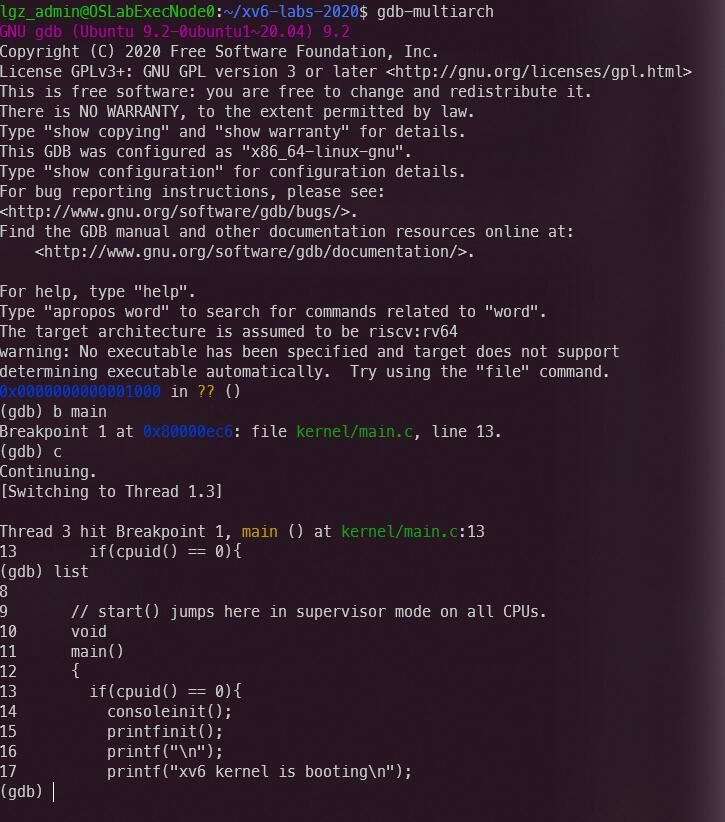
使用VSCode可以方便快捷地使用图形化界面完成调试功能。以下是设置步骤。
1. 设置GDB信任¶
在终端中，输入：
echo "set auto-load safe-path /" >> ~/.gdbinit
这会关闭gdb的autoload信任机制——别担心，你们没有管理员权限，搞不坏远程环境的。
2. 获取专属GDB端口号¶
接下来，获取你专属的GDB端口号。在控制台输入expr $(id -u) % 5000 + 25000并回车，你应该能得到一串数字：
ldap_example@OSLabExecNode0:~$ expr $(id -u) % 5000 + 25000
25001 // ← 这个
请记好这串数字，后面会用到。
3. 设置VSCode¶
首先 确认你的VSCode工作区路径是否是你的xv6路径，没有额外嵌套一层文件夹 。按下Ctrl+`，呼出终端，输入ls。你应该会看到如下情景：
ldap_example@OSLabExecNode0:~/xv6-oslab23-hitsz$ ls
conf fs.img grade-lab-util gradelib.py gradelib.pyc kernel LICENSE Makefile mkfs README user
如果不是，打开新的工作区，选择xv6所在的文件夹打开即可。
在VSCode左侧，点击扩展选项，搜索、安装Native Debug插件 ，点击安装：
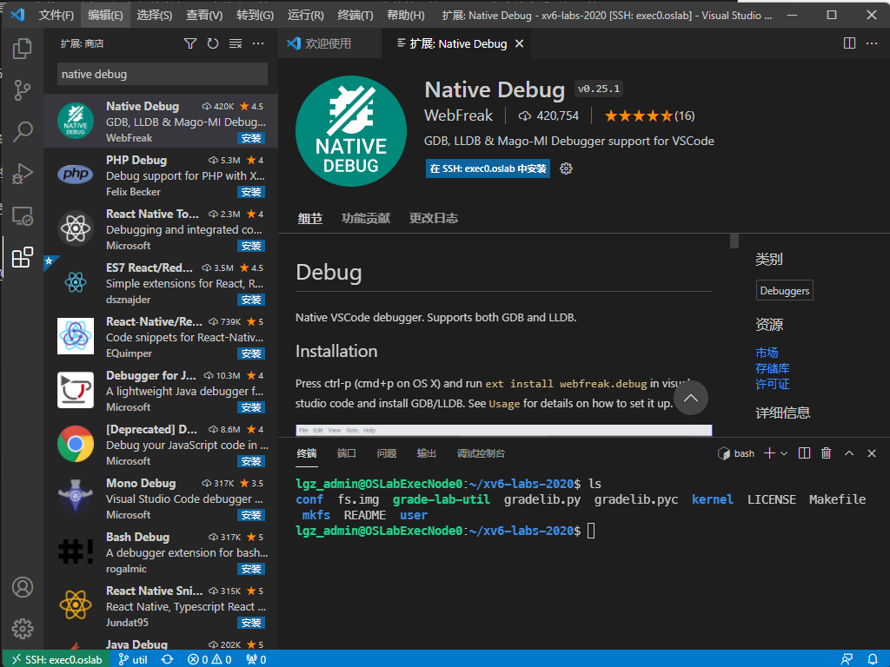
插件推荐
同时，我们也强烈推荐你安装VSCode的C/C++插件。这会给你带来自动补全、Ctrl-点击跳转等各种方便的功能。
在VSCode左侧，点击“运行和调试”选项，如图：
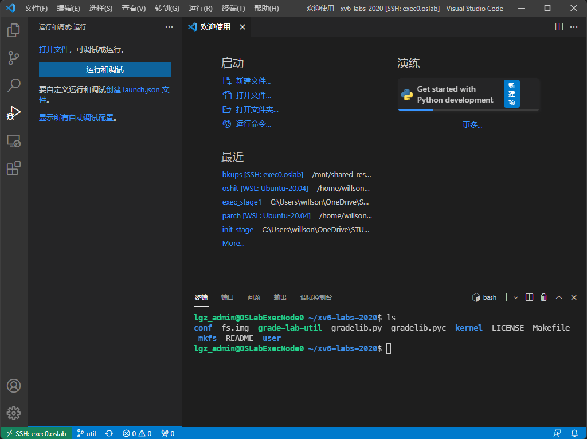
选择创建launch.json文件，选择GDB。
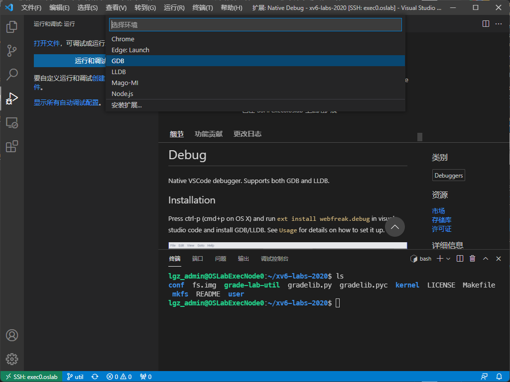
这会打开一个名为launch.json的文件。将其中内容全部替换为如下：
{
"version": "0.2.0",
"configurations": [
{
"type": "gdb",
"request": "attach",
"name": "Attach to gdbserver",
"executable": "${workspaceRoot}/kernel/kernel",
"gdbpath": "gdb-multiarch",
"remote": true,
"target": "127.0.0.1:此前你得到的GDB端口号",
"cwd": "${workspaceRoot}",
"setupCommands": {
"text": "source ${workspaceFolder}/.gdbinit"
}
}
]
}
其中，第十行"target": "127.0.0.1:此前你得到的GDB端口号",第二个冒号后中文内容 替换 为此前你通过expr $(id -u) % 5000 + 25000得到的数字，比如25001。Ctrl+S以保存。
如此，配置便宣告完成，可以使用。
4. 基础使用教学¶
注意
默认启用的是xv6内核的调试。若要调试用户程序，方法参见下方4.4.4 用户态程序调试节。
为演示起见，我们在kernel/main.c的第13行打下一个断点，如图。
 断点可以靠使用鼠标点击行号左侧设置。
断点可以靠使用鼠标点击行号左侧设置。
在下方命令行输入make qemu-gdb。qemu会自动启动，gdb开始等待接入。按下F5， 或者 点击左侧按钮运行与调试，并点击左上角绿色三角（Attach to gdb)：
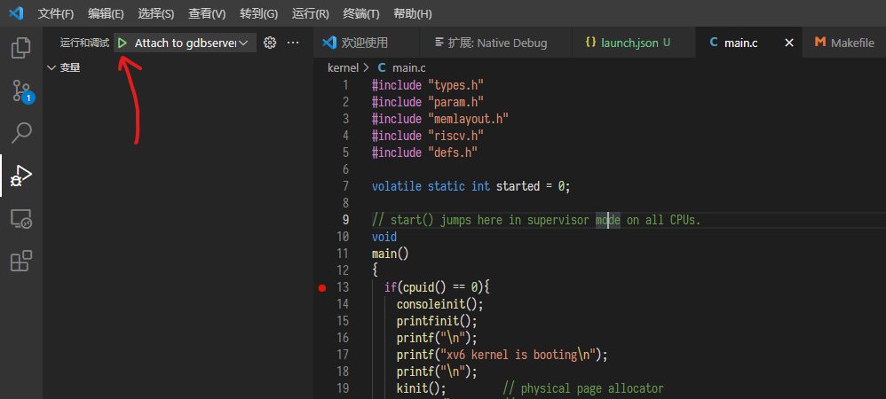 现在，内核成功运行，并且停止在了断点处，如图所示： 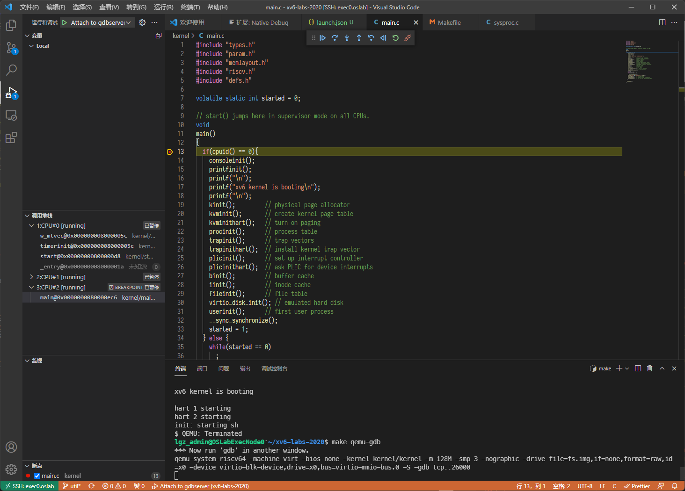 这证明了我们的配置与GDB运行正常。
上方的数个按键，分别是“运行”、“单步跳过（下一行）”，“单步调试（步入函数）”，“单步跳出（跳出函数）”，“回退（不支持）”，“反向（不支持）”，“重启（不支持）”，“断开”，如下所示： 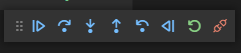
注意
每次调试完成，务必使用红色按钮 断开 GDB调试，并在命令行中 Ctrl-A, X以停止qemu。
注意
运行时不应对源文件进行任何修改。此时修改并无任何意义。如果需要更改程序，请停止调试、完成修改再重新开始调试。
点击单步，你可能会发现语句飞的到处都是。这是因为，xv6实验时默认是开启多核处理的。如下图左侧所示，现在有三个线程在同时运行，代表三颗CPU核心：

注意
如果不想开启多核心，可以在运行make qemu-gdb时使用CPUS=1，以单核模式启动，即输入命令变为make qemu-gdb CPUS=1。
注意
开启多核心是许多lab检查的必要条件，因为有些lab下需要处理多核心之间竞争问题。手动指定CPUS仅用于调试用途，如果你提交的代码仅可在单核下运行、而不能在通常情况下运行，你将无法得到分数或只能得到部分分数。此时你应当关注锁与竞争相关的问题。
为了便于演示起见，后续以单核模式执行。
4.1 单步跳过¶
左侧第二个按钮为单步跳过（向下一行）按钮。点击它可以让程序向下运行一行。如下所示为初态：
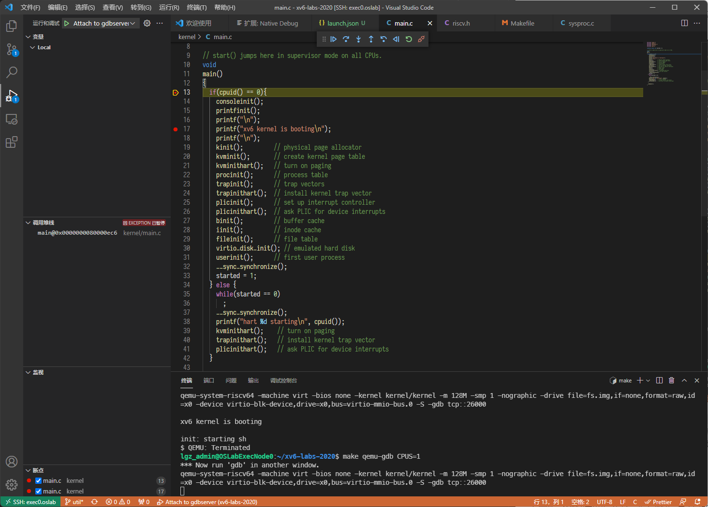
按下单步跳过按钮，则程序向下执行一行：
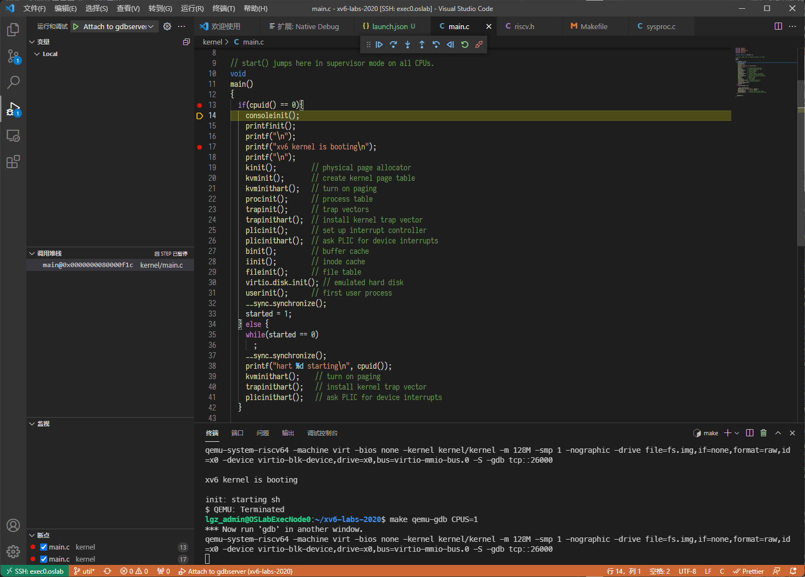
4.2 断点功能¶
运行时也可设置断点。程序将在运行到断点时停止。点击行号左侧即可设置断点。以该状态为初态，我们可以发现在17行处有一个未触发的断点：
点击“运行”（左侧第一个按钮），程序将自动运行到下一个断点并停止：

从输出可见其输出了一个回车，并停止在了该语句执行之前。
4.3 单步调试（步入函数）、单步跳出与局部变量¶
上回我们停在了一个printf处。我们现在将进入printf函数内部进行研究。我们点击单步调试按钮（左数第3个），这会带我们进入printf函数的第一条可执行语句：
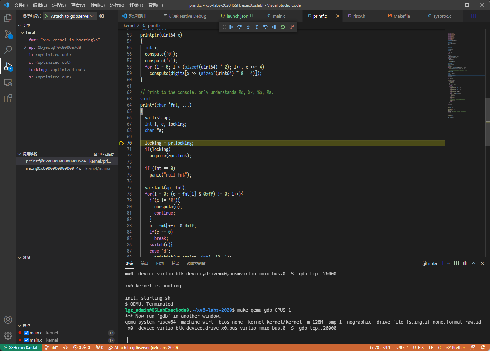
此时，左上角会显示当前的局部变量。<optimized out>表明其已被优化掉不可见，这有可能因为其 暂时尚未被初始化 。如图，继续使用单步跳过（下一行），进入第78行，我们会发现部分此前显示<optimized out>的变量已经可见：
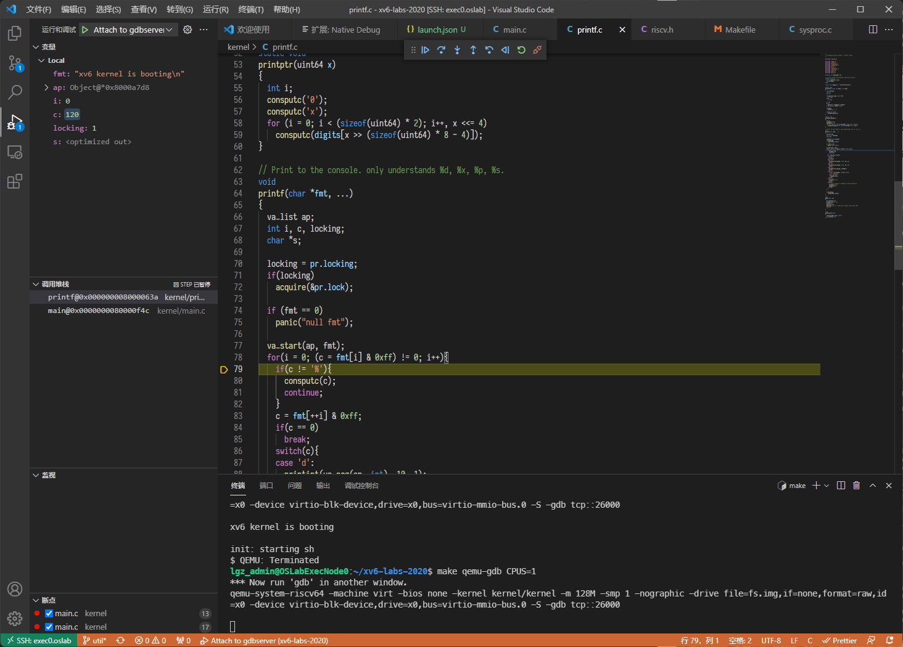
复杂的变量（如结构体）可以展开以查看内容。
当你完成该函数处的调试与研究，可以点击单步跳出（左侧第4个按钮）以跳出该函数。如图，命令行处显示对应信息，表明该函数已被执行完成；调试器现在停在了函数外：
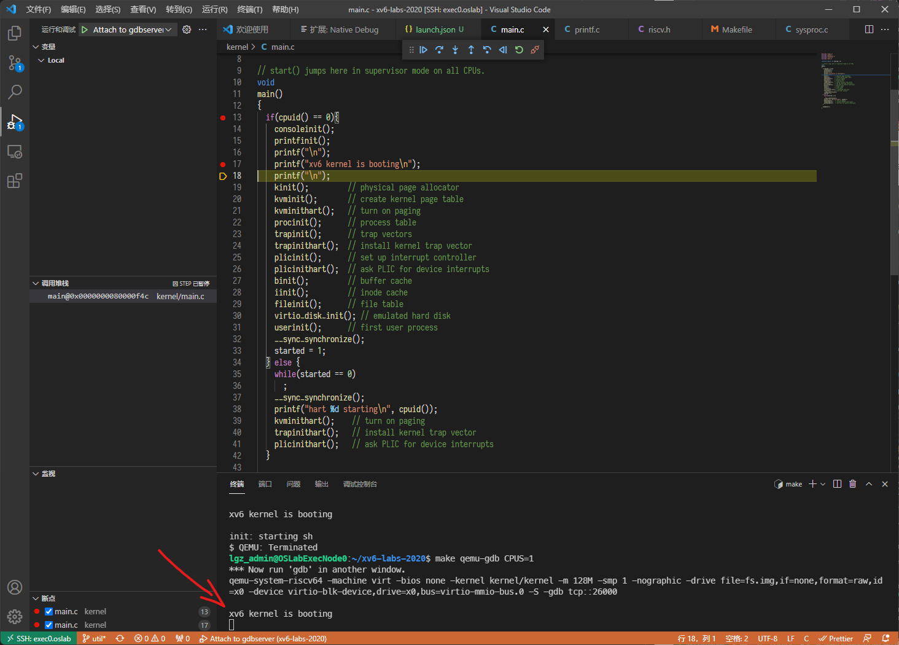
4.4 略微高级一点的技巧¶
以上内容皆可依靠GUI完成，并且已经可以覆盖绝大多数需求。如果你需要其他一些高级功能，或者仅仅只是想要了解更多——欢迎。 这部分将更为简短，并且默认你们拥有一定程度的前置知识。 以下内容均需要通过调试控制台操作。 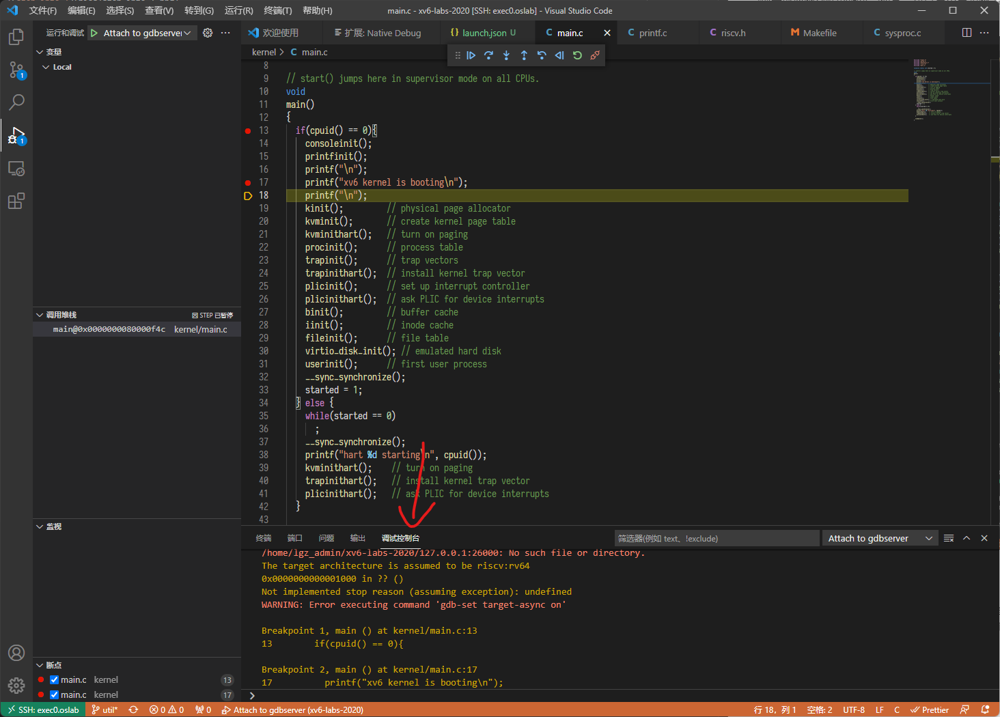
4.4.1 单步汇编调试、汇编显示¶
我们以Trampoline处的调试作为示例。我们可以进入userret处：
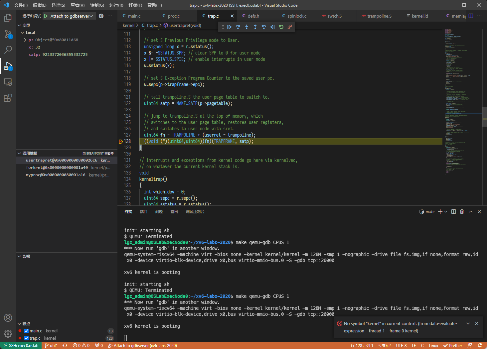
单步跳过该指令，进入trampoline的userret。通过disas $pc, $pc+20，可以显示接下来20byte的汇编指令，可以发现我们确实进入了userret处：
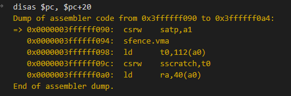
或者使用display/10i $pc可以让gdb持续自动显示从pc起的10条指令。
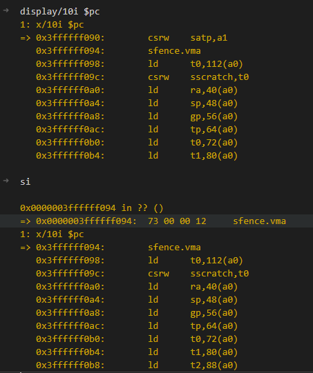
注意
这里直接b uservec是不可行的，这是由Trampoline的特殊性导致的。可以自行阅读、理解一下为什么。
4.4.2 寄存器内容分析¶
使用info reg可以显示当前CPU的寄存器。
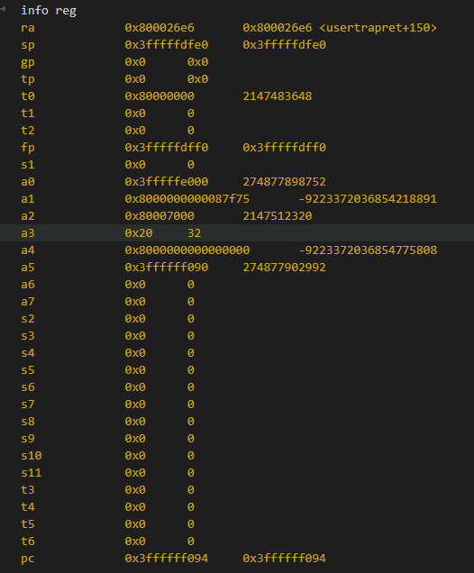
4.4.3 内存内容¶
使用x/字节数b *地址可以展示内存内容：
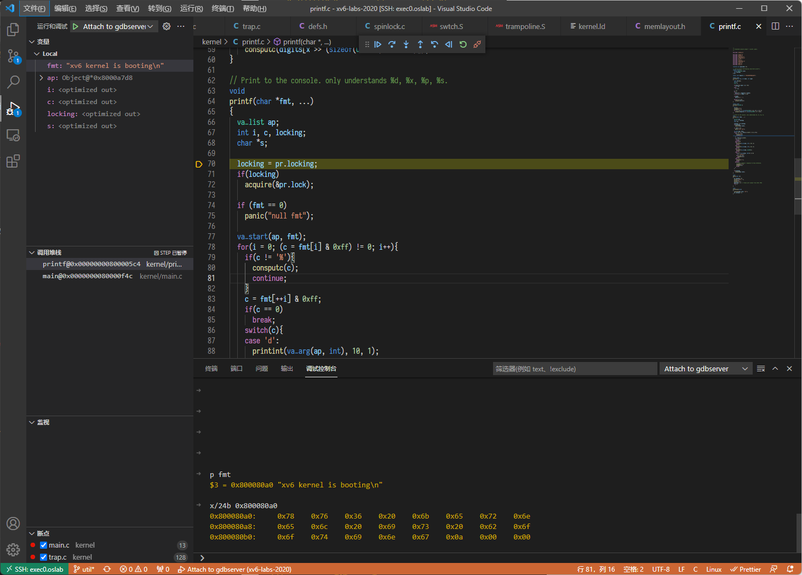
4.4.4 用户态程序调试¶
xv6的内核态和用户态并不共享页表，调试符号也完全不同。调试用户程序需要加载对应的用户程序调试符号，我们将通过调试控制台完成这一项操作。我们以调试自带的用户程序“ls"为例。
Step1： 先在终端输入“make qemu-gdb”。
接着，按下F5， 或者 点击左侧按钮运行与调试，并点击左上角绿色三角（Attach to gdb)。
再点击“运行”，让xv6正常运行，直到出现“$”，表示已经进入shell中。
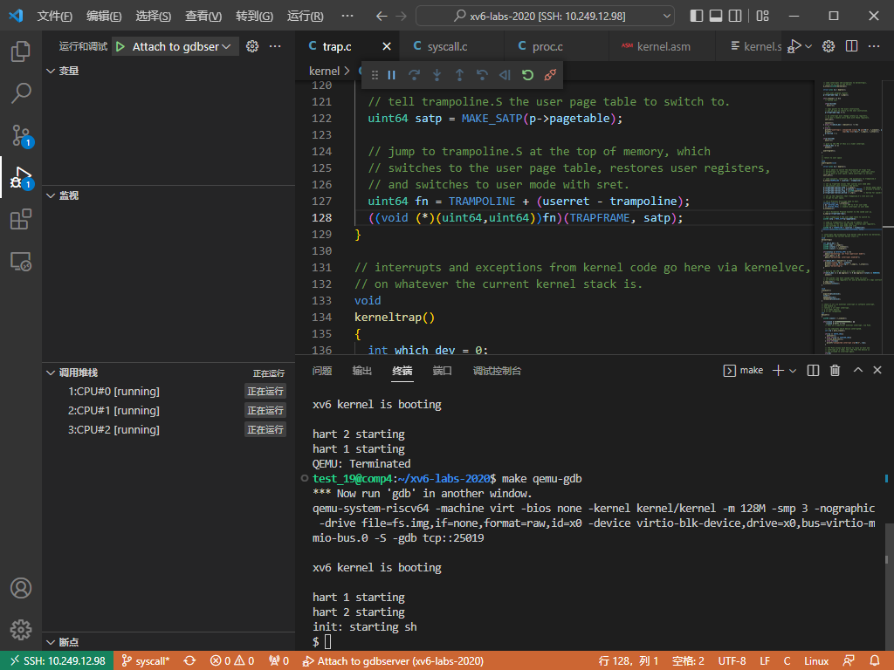
Step2： 在调试控制台，输入“interrupt”。
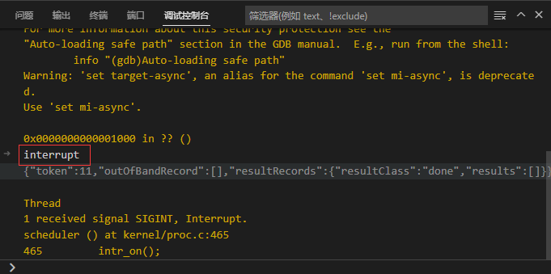
Step3： 我们知道，在进入Trampoline切换前最后一行C代码位于kernel/trap.c:128处，我们将断点打在此处，继续点击“运行”。
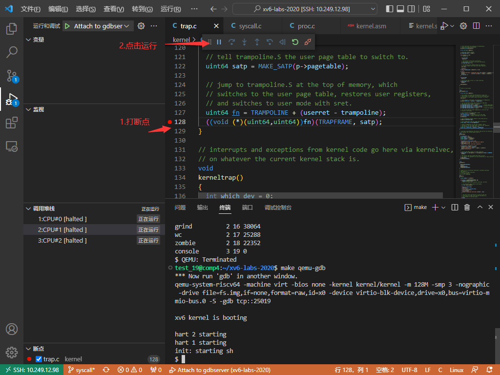
Step4： 在xv6的shell中输入ls，以启动ls程序；程序停留在kernel/trap.c:128处。
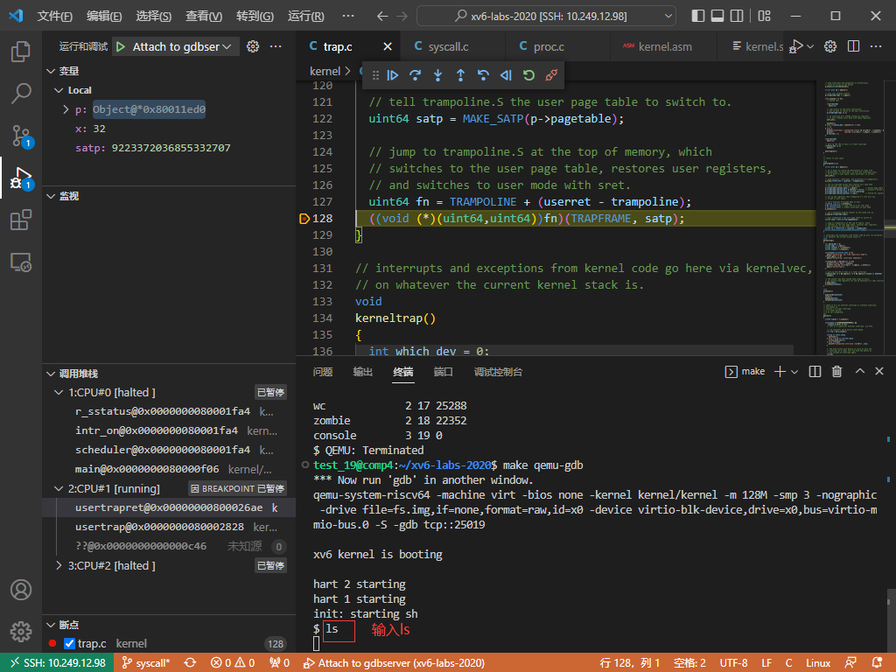
Step5： 接下来，我们需要确认对应xv6的用户程序入口点，我们有两种方法可以确认应用程序的入口点：
- 通过readelf确认应用程序入口点。
- 在VSCode上直接打开该应用程序的源代码，找打main()函数，并在main()函数里打上断点。
以下分别介绍两种方法：
方法一: 通过readelf确认应用程序入口点
ls的elf文件位于user/_ls：
lgz_stu@OSLabExecNode1:~/xv6-oslab23-hitsz$ readelf -h user/_ls
ELF Header:
Magic: 7f 45 4c 46 02 01 01 00 00 00 00 00 00 00 00 00
Class: ELF64
Data: 2's complement, little endian
Version: 1 (current)
OS/ABI: UNIX - System V
ABI Version: 0
Type: EXEC (Executable file)
Machine: RISC-V
Version: 0x1
Entry point address: 0x27a
Start of program headers: 64 (bytes into file)
Start of section headers: 25064 (bytes into file)
Flags: 0x5, RVC, double-float ABI
Size of this header: 64 (bytes)
Size of program headers: 56 (bytes)
Number of program headers: 1
Size of section headers: 64 (bytes)
Number of section headers: 18
Section header string table index: 17
可见其中显示Entry point address: 0x27a，应用程序入口点位于0x27a处。随后，我们用上面的方法开始调试，并将断点打在即将返回用户态处。
我们前往调试控制台，在其中输入b *0x27a，即将断点置于ls程序入口处：
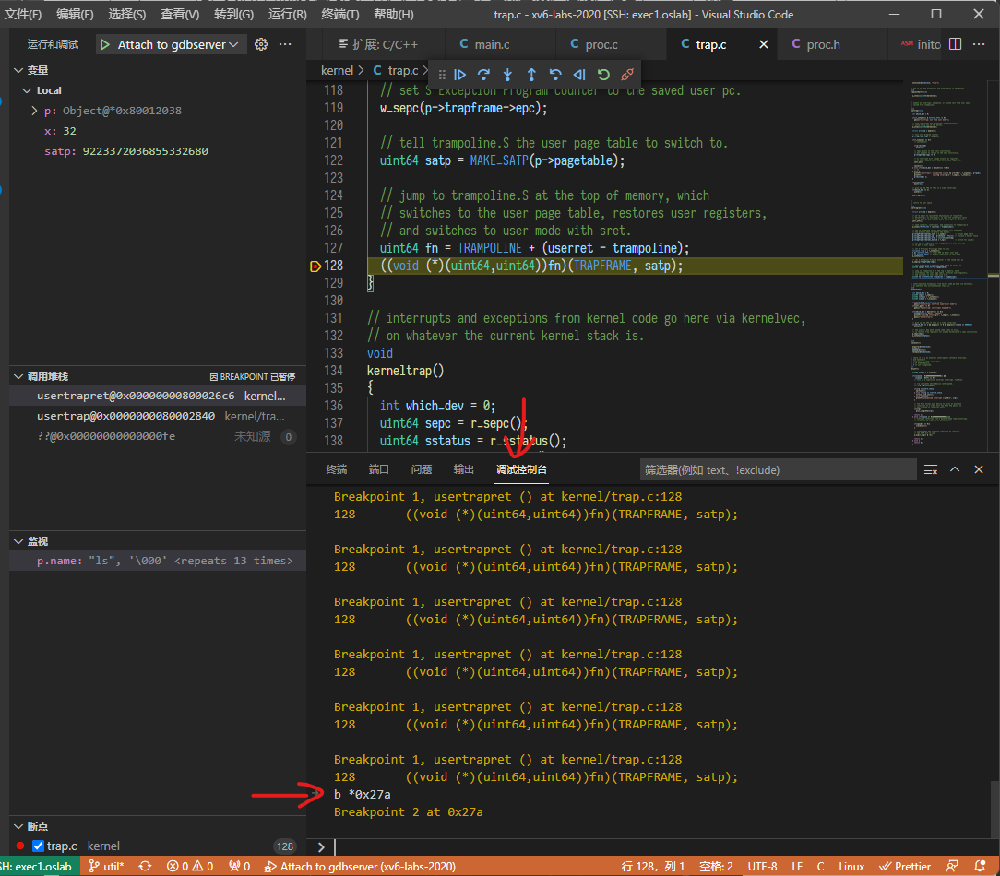
方法二: 在应用程序的源代码main()函数打断点
在VSCode中，打开user/ls.c文件，找到main()函数，在第78行打上断点。
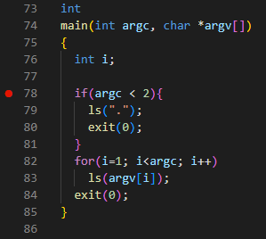
通过上述两个方法都可以确认应用程序的入口点，将断点打在应用程序的main()上。
Step6： 接下来，我们需要在调试窗口左下角删除原有的内核态断点，并通过调试控制台，加载ls的调试符号。在其中输入file user/_ls：
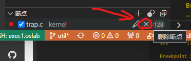 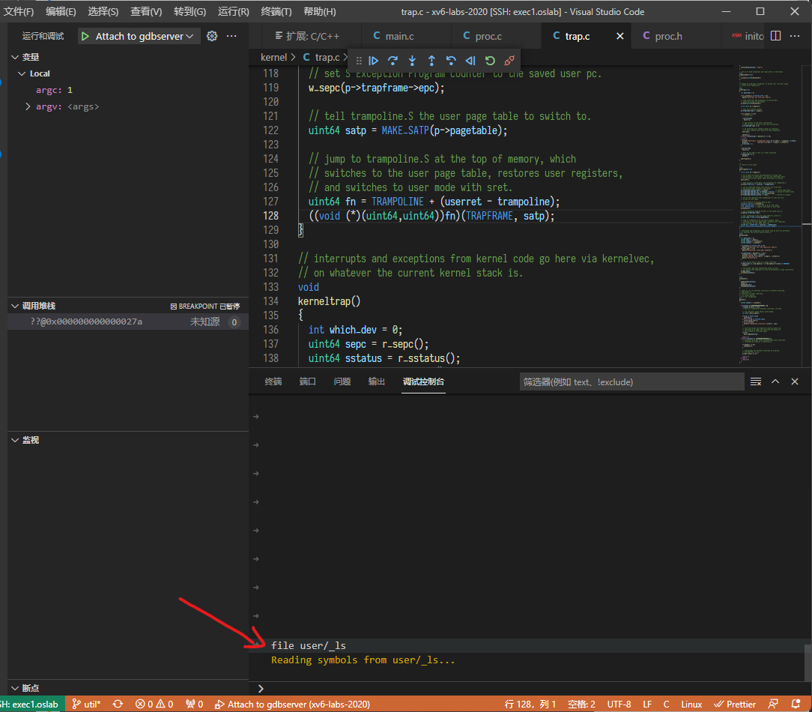
Step7： 点击“运行”。可以看到已经进入了ls.c的main函数中。
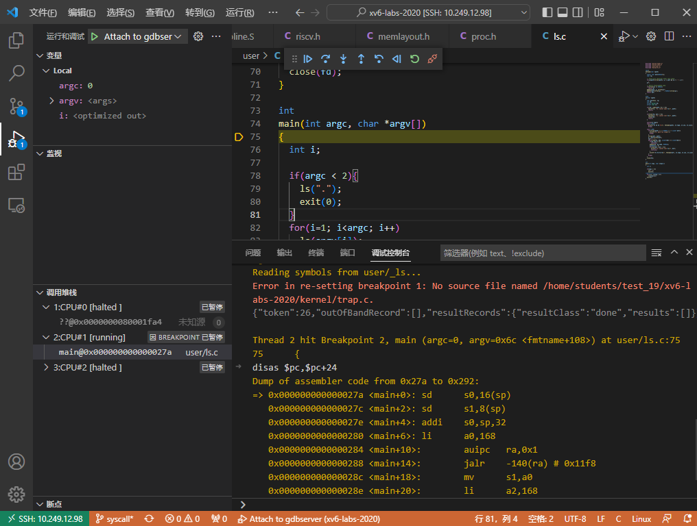
Step8： 此时，可以在user/ls.c文件中直接打上断点，下图是在user/ls.c中的第78行打断点。如果已经在78行打过断点，可以忽略这一步。
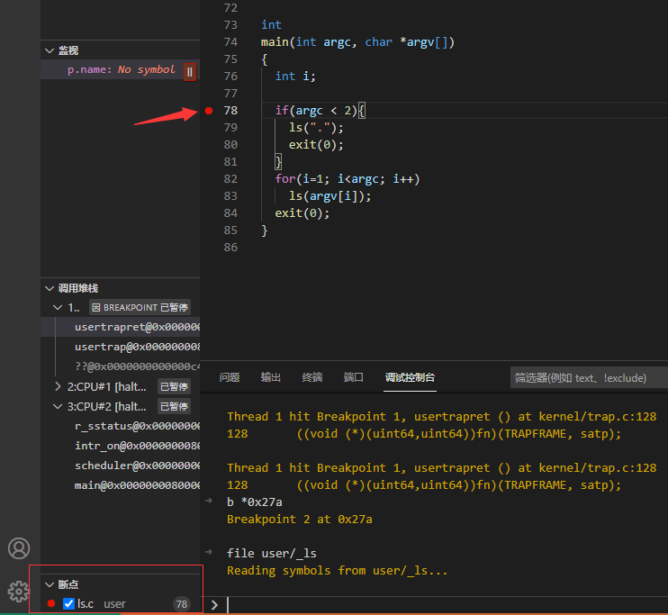
Step9： 接下来，继续执行。qemu将停止在ls程序的第78行。

点击上方的单步调试按钮，我们发现vscode的GUI调试工具现也以可以正常工作。
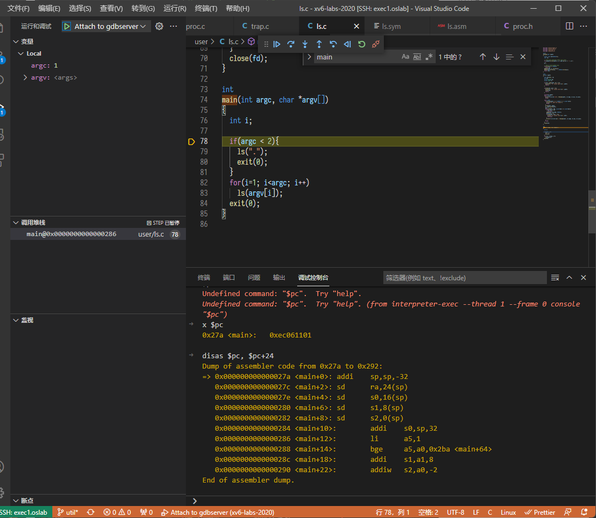
此后的各种调试流程与调试内核时相同。
4.4.5 其他...¶
剩下的可以自行寻找GDB的手册。此外，由于我们的实验运行在qemu上，且使用的是较为新颖的RISC-V架构，故而常常会有不支持或者错误的情况发生，这是正常的。同学们可以试试自行解决问题。